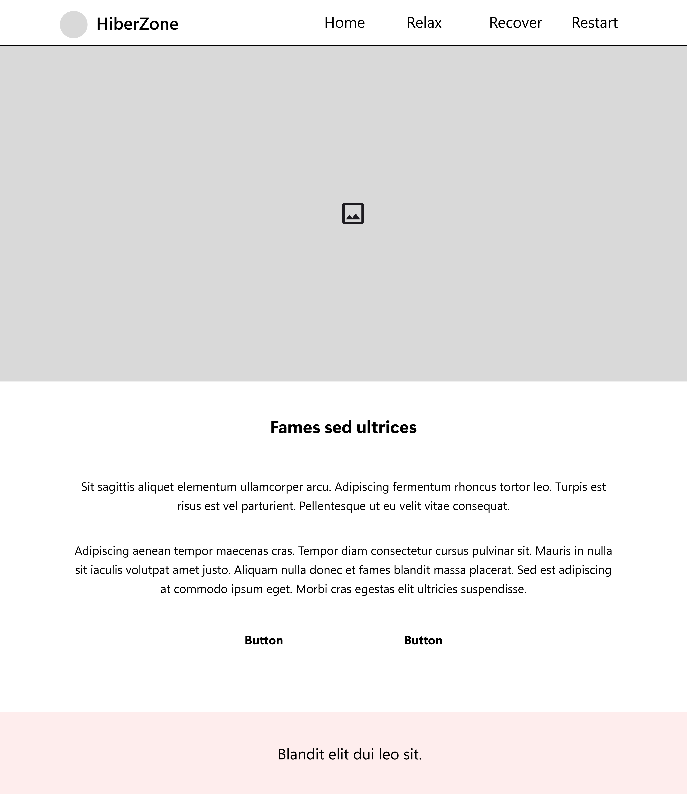
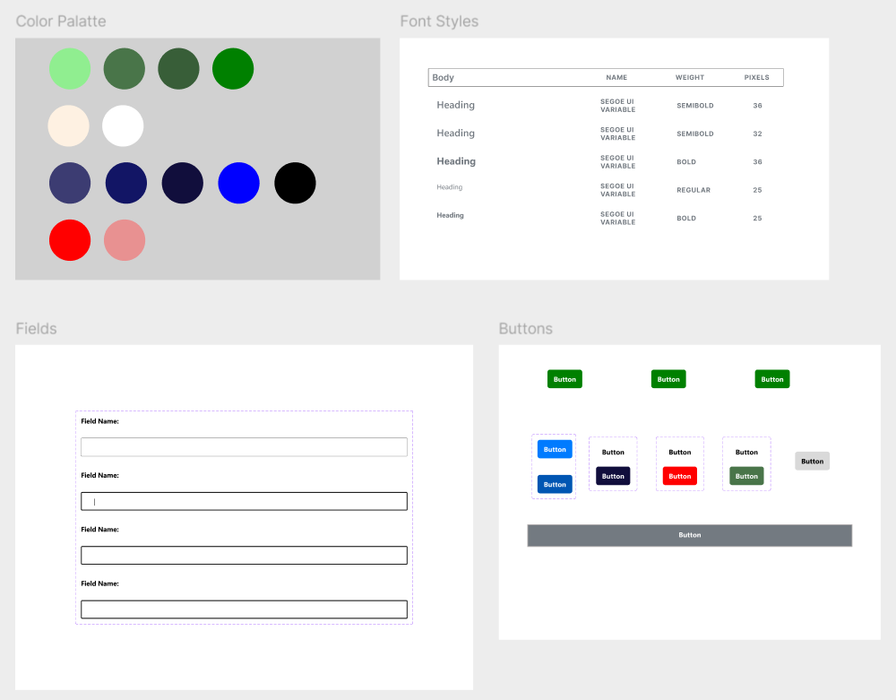

Problem Summary
Many individuals struggle to find accessible, user-friendly platforms dedicated to maintaining emotional well-being. Existing solutions often lack personalized guidance and easy access to mental health resources.
Hiber-Zone is a mental healthcare system designed to maintain emotional well-being. This web application, fully developed by me as part of a college project, provides assistance in the journey of achieving a calmer state of mind, offering easy access to relaxation resources and support through a chatbot named PAL.
6 weeks
UX/UI Designer & Web Developer
Figma, HTML, CSS, JavaScript, Python
College Project, Self-Initiated
Many individuals struggle to find accessible, user-friendly platforms dedicated to maintaining emotional well-being. Existing solutions often lack personalized guidance and easy access to mental health resources.
Hiber-Zone offers a safe and comforting space where users can relax, recover, and restart. The platform includes features like a chatbot (PAL) for personalized support, access to mental health resources, and a user-friendly interface to navigate services. The platform is designed to motivate individuals to process their feelings and regain their mental equilibrium.

Before going to digital wireframes, I roughed out ideas and layouts that I had on paper. This phase let me test a number of ideas at once and also decide on the final outline of the text. Sketching also helped to identify potential usability issues early, which is important for the next steps of a digital design phase.
Created low-fidelity wireframes for the main screens: Home, Chatbot (PAL), Resources, Profile, Recovery Zone, and Admin Dashboard. Iterated based on initial feedback.

Defined the structure and navigation flow of the platform.

Developed interactive low-fidelity prototypes to test the user flow and gather initial feedback.
- Color Palette: I used a primary color scheme featuring #90EE90 (light green), #3C3C72 (deep blue), and #E89191 (soft pink). To enhance visual variety, I expanded these colors by applying their tints and shades throughout the design.
- Typography: The 'Segoe UI Variable' font family was chosen for its readability and versatility. I implemented different font styles and sizes to ensure visual hierarchy and consistency across the platform.
- Button Variations: I designed multiple button styles to complement different page layouts and color contrasts, enhancing both usability and aesthetics.
- Input Fields: Responsive input fields were designed to provide seamless interaction, with distinct styles for hover, focus, and error states to improve user experience and feedback.
- Created high-fidelity mockups incorporating branding, color schemes, and typography.
- Developed interactive high-fidelity prototypes to demonstrate the final user experience, with an emphasis on a calming and user-friendly interface.

- Developed the entire web application using HTML, CSS, JavaScript, and Python.
- Ensured the platform was responsive and optimized for various devices, providing a seamless user experience.
- Implemented the chatbot (PAL) for personalized user interaction and service recommendations.
- Conducted usability tests with potential users to identify pain points and areas for improvement.
- Gathered feedback and made necessary adjustments to the design, particularly in chatbot interactions and resource accessibility
Based on usability testing feedback, iterated on the design and development to improve usability and visual appeal. Key iterations included enhancing the chatbot interaction, simplifying the navigation, and refining the visual design for a more calming experience.
- Success Metrics: Although this is a conceptual project, outline potential success metrics such as user engagement rates, chatbot usage, and user satisfaction scores.
- Potential Impact: With more updates and user suggestions Hiber-Zone can be tailored accordingly and could a gap in the mental healthcare market and offer a valuable resources for emotional well-being.
Through this project, I gained a deeper understanding of user-centered design and how to balance creativity with functionality. I also learned how design elements need to be adjusted to simplify the development process, providing a valuable insight into bridging the gap between design and development.